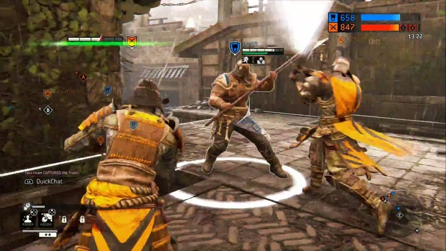
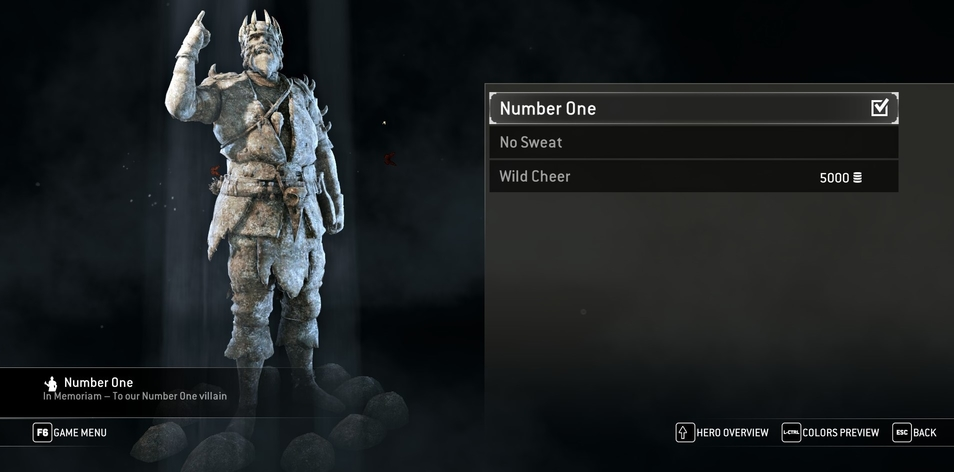
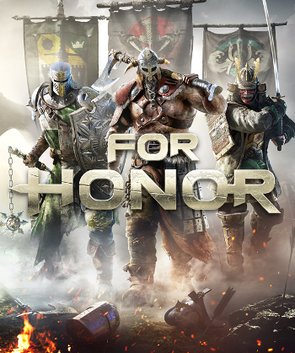

Description

Carve a path of destruction through an intense battlefield in For Honor, a brand-new, groundbreaking melee action game developed by Ubisoft Montreal in collaboration with other Ubisoft studios.
Additional Information
- Genre: Action
- Gameplay: Hack and Slash, RPG Elements
- Players: Network 2-8
- Online Play: Required
Trivia (Stefán Karl Stefánsson Tribute)
From Trivia section of MobyGames information about For Honor:
The game pays tribute to voice actor Stefán Karl Stefánsson, who contributed to the game's Icelandic voice talent and was better known for his role as villain Robbie Rotten on children's TV programme LazyTown, where the song "We Are Number One" became a popular internet meme. The tribute in question is a special statue called "Number One" and captioned "In Memoriam – To our Number One villain".
Review
From The Guardian's review of For Honor:
For Honor exhibits an extraordinary purity of vision – the result perhaps of designer Jason VandenBerghe’s 10-year quest to get it made. It is therefore a fascinating game for people who take the fighting genre seriously. It isn’t a brawler, it isn’t Street Fighter and it isn’t Mount and Blade – it exists somewhere between all three, and it demands that players develop a broad range of skills to master its armoury. You will enjoy For Honor more if you can form a clan with friends and support each other properly, but even for casual swordsmen and swordswomen it has much to offer.